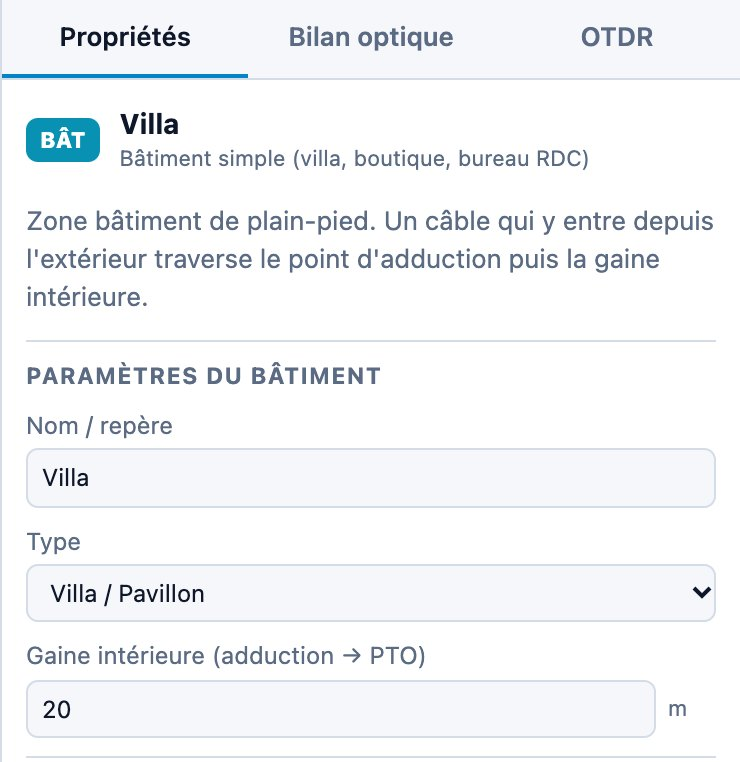

Exercice 5 — Bilan complet d'une villa Intermédiaire · 25 min
OLT +4 dBm · 1490 nmjarretièreODFG.652D 4 km · fusion/fusionSRO 1:16G.652D 600 m · fusion/fusionPBO (épissures)drop 50 m · fusion/fusionVilla : gaine 20 m → PTOjarretièreONT
Le PBO est à épissurage : ses pertes sont déjà comptées dans les épissures des câbles. Les jarretières ne comptent pas (leurs connecteurs sont dans l'ODF et la PTO).
Tronçon
Détail du calcul
Perte (dB)
NRO : traversée de l'ODF
Transport 4 km + 2 épissures
SRO : brassage + coupleur
Distribution 600 m + 2 épissures
Branchement : drop + gaine + 2 épissures
PTO
Atténuation totale
Puissance reçue par l'ONT : .................. dBm · Marge : .................. dB · Statut : ..................
Vérification dans OptiSim
Construisez le réseau ci-dessus. Pour la villa, glissez un Bâtiment simple, réglez sa Gaine intérieure à 20 m (capture ci-contre), puis déposez la PTO et l'ONT à l'intérieur du cadre.
Le drop se tire du PBO vers la PTO avec 50 m : la gaine de 20 m est ajoutée automatiquement.
Sélectionnez l'ONT, onglet Bilan optique : comparez chaque ligne avec votre tableau.

Propriétés de la villa : la gaine intérieure.
Écart éventuel entre votre calcul et le simulateur : .................. dB · Explication : ..........................................................
Exercice 6 — Colonne montante Intermédiaire · 10 min
Immeuble R+6 avec sous-sol, hauteur d'étage 2,8 m. Le PMI est au sous-sol (niveau −1). Longueur de colonne = écart d'étages × hauteur d'étage.
Trajet
Écart d'étages
Longueur (m)
PMI → PBO étage 2
PMI → PBO étage 4
PMI → PBO étage 6
La perte de fibre de la colonne jusqu'au 6e étage (1490 nm) est-elle significative ? Justifiez.
Dans le simulateur, sur un immeuble R+3 (capture ci-contre, 3 m par étage), quelle longueur affiche la colonne entre le PMI (sous-sol) et le PBO de l'étage 1 ? ............ m
Exemple d'immeuble R+3 dans OptiSim (TP 3) : la colonne montante est en orange dans la gaine technique.
Exercice 7 — Statut d'un ONT Intermédiaire · 10 min
ONT de classe B+ (sensibilité −27 dBm, saturation −8 dBm). Complétez : statut = OK, faible (marge < 3 dB), LOS ou saturation.
Exercice 8 — Dimensionner une liaison Avancé · 20 min
Réseau : OLT (+4 dBm, 1490 nm) → ODF → câble de transport → SRO → câble de distribution → PBO (épissures) → drop → PTO → ONT B+. Chacun des 3 câbles est épissuré par fusion aux deux extrémités. On veut une marge d'au moins 3 dB.
Quel est le budget optique (P émise − sensibilité) ? Quelles pertes sont admissibles avec la marge de 3 dB ?
Calculez les pertes fixes (hors fibre) avec un coupleur 1:32 au SRO.
Un abonné se plaint d'une connexion instable. Le technicien tire l'OTDR depuis le NRO vers l'ONT, avec une bobine amorce de 500 m, à deux longueurs d'onde. Le réseau est : ODF → 2 km de G.652D → SRO 1:8 → drop de 80 m → PTO → ONT.
N°
Distance
Type
Perte à 1310 nm
Perte à 1550 nm
1
500 m
Réflectif
0,30 dB
0,30 dB
2
502 m
Réflectif
0,55 dB
0,55 dB
3
2 502 m
Coupleur
11,10 dB
11,10 dB
4
2 542 m
Non réflectif
2,50 dB
5,00 dB
5
2 582 m
Réflectif
0,55 dB
0,55 dB
6
2 584 m
Fin de fibre
—
—
Associez chaque événement 1, 2, 3, 5 et 6 à un élément du réseau.
Quel événement est anormal ? À quelle distance réelle (depuis le départ du réseau) se trouve-t-il ? Sur quel câble ?
Quelle est la nature probable du défaut ? Justifiez avec les deux longueurs d'onde.
Quel instrument permettrait de le confirmer visuellement ? Que verrait-on ?
Sur la capture : retrouvez la courbe et la ligne de l'événement anormal. Attention, dans le simulateur la ligne n° 1 est le départ de l'OTDR (0 m) : les numéros sont décalés de 1 par rapport au tableau ci-dessus.
Exercice 11 — Diagnostic à partir des symptômes Avancé · 20 min
Valeurs normales du réseau de l'exercice 10 (1490 nm) : SRO 2,90 dBm · PTO −8,22 dBm · ONT −8,72 dBm. Pour chaque cas, indiquez la panne la plus probable et sa localisation.
Symptômes
Diagnostic
a) ONT voyant LOS rouge. Photomètre : SRO 2,90 dBm, PTO : LOS.
b) Photomètre : SRO 2,90 dBm, PTO −8,22 dBm, ONT −11,72 dBm.
c) Photomètre : SRO 1,40 dBm, ONT −10,22 dBm. OTDR : événement non réflectif de 1,5 dB à 1 702 m, identique à 1310 et 1550 nm.
d) Après une intervention au NRO, l'ODF reçoit 4,00 dBm mais le SRO ne reçoit plus rien. L'OTDR indique qu'aucun chemin optique continu n'arrive à l'ONT.
e) Nouveau raccordement très proche du NRO, sans coupleur : ONT à +1,78 dBm, voyant d'alarme.
f) Tous les ONT d'un immeuble sont en LOS ; le PMI ne reçoit plus de lumière.
Valeurs à utiliser (celles du simulateur) : GPON 2 488 Mbit/s descendants et 1 244 Mbit/s montants partagés entre les ONT actives d'un même port PON · profils : Internet 300 (300 / 300), Internet 1 Gbit/s (1 000 / 500), Duo (1 000 / 500), Triple play (1 000 / 700) · débit d'un abonné = le plus petit entre son profil et sa part du GPON (arrondie à l'entier inférieur) · Active Ethernet : port dédié de 1 000 Mbit/s.
Exercice 12 — Adressage IP d'un réseau domestique Intermédiaire · 20 min
La Box a l'adresse 192.168.1.1 avec le masque /24 (255.255.255.0). Son serveur DHCP distribue les adresses de 192.168.1.10 à 192.168.1.50.
Quelle est l'adresse du réseau local ? Son adresse de diffusion (broadcast) ?
Combien d'appareils la plage DHCP peut-elle servir ?
Pour chaque appareil configuré en adressage statique, indiquez si la configuration est correcte ; sinon, donnez l'erreur.
Adresse IP
Masque
Passerelle
Correcte ? Sinon, quelle erreur ?
a
192.168.1.20
/24
192.168.1.1
b
192.168.2.20
/24
192.168.1.1
c
192.168.1.30
/24
192.168.1.254
d
192.168.1.255
/24
192.168.1.1
e
192.168.1.40
/25
192.168.1.1
f
192.168.1.1
/24
192.168.1.1
Pourquoi est-il conseillé de choisir une adresse statique en dehors de la plage DHCP (par exemple 192.168.1.100) ?
Le serveur DHCP de la Box est désactivé et le PC est en adressage automatique. Le PC affiche l'adresse 169.254.37.12. Que signifie-t-elle ?
Exercice 13 — Débit GPON partagé Intermédiaire · 15 min
Plusieurs abonnés Triple play (1 000 / 700 Mbit/s) sont raccordés au même port PON d'un OLT par un coupleur. Complétez le tableau.
ONT actives sur le port
Part GPON ↓
Part GPON ↑
Débit de l'abonné ↓
Débit de l'abonné ↑
1
2
4
8
16
À partir de combien d'ONT actives l'abonné n'obtient-il plus le débit descendant de son profil ?
Avec 8 ONT actives, quel débit obtiendrait un abonné « Internet 300 » ?
Une entreprise est raccordée en Active Ethernet (port SFP de 1 Gbit/s), profil Triple play. Son débit dépend-il du nombre d'autres abonnés ? Quel débit obtient-elle ?
Exercice 14 — Diagnostic d'un service Avancé · 20 min
Réseau de la Maison Dupont (TP 10) : routeur de collecte en PPPoE → OLT → ONT → Box → PC, décodeur TV et téléphone. VLAN 100 / 200 / 300. Une panne de configuration cachée a été injectée. Pour chaque cas, on donne les appareils en défaut et le diagnostic affiché par le simulateur. Indiquez la cause la plus probable et l'équipement à corriger.
Appareils en défaut · étape · symptôme
Cause probable · équipement à corriger
a) Les 3 appareils · « Autorisation de l'ONT sur l'OLT » · ONT ALCL1A2B3C4D détectée sur le port PON 1 mais refusée par OLT NRO.
b) Décodeur TV seul · « VLAN TV » · Le trafic TV n'aboutit pas : aucune réponse du réseau opérateur.
c) Les 3 appareils · « Session WAN de la Box » · Session PPPoE refusée par le réseau opérateur : le voyant Internet de la Box reste éteint.
d) Les 3 appareils · « Session WAN de la Box » · Aucune adresse WAN reçue : pas de réponse DHCP du réseau opérateur.
e) Les 3 appareils · « Adresse IP de l'appareil (LAN) » · L'appareil s'est attribué une adresse 169.254.x.x (APIPA).
f) Décodeur TV et téléphone · « Service … dans le profil » · Le service TV n'est pas fourni à cet abonné.
g) Les 3 appareils · « Routeur de collecte » · Aucune réponse du réseau opérateur pour le service Internet.
h) PC seul · « Adresse IP de l'appareil (LAN) » · L'appareil n'arrive pas à joindre sa passerelle : Internet est inaccessible. Le PC est en adressage statique.
Pour le cas a, l'ONT reçoit −15,97 dBm. Pourquoi est-on sûr que la panne n'est pas optique ?
Sur la capture : quelle est l'étape en défaut ? Lequel des cas ci-dessus correspond ? Quelles étapes sont validées ?